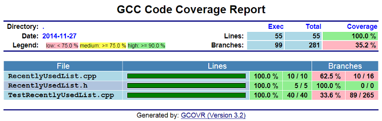

risorse | gcov-cpp
Gcov è un'utilità che determina quante e quali righe di codice sorgente sono state eseguite a seguito di un'esecuzione di un programma compilato con GCC. Può quindi essere utilizzato per misurare il grado di copertura realizzato da uno unit-test rispetto all'implementazione dell'oggetto sotto test.
L'esperimento è stato condotto su Windows 7 Pro SP1 x64 utilizzando il compilatore GCC della distribuzione MinGW v. 11.6[7]. I sorgenti in gioco sono tre: RecentlyUsedList.h e RecentlyUsedList.cpp, che definiscono l'implementazione dell'oggetto di cui si vuole verificare il funzionamento, e TestRecentlyUsedList.cpp, che contiene il codice di test:
[RecentlyUsedList.h]
#include <string>
#include <vector>
class RecentlyUsedList {
std::vector<std::string> items_;
public:
bool empty() const {
return items_.empty();
}
size_t size() const {
return items_.size();
}
std::string operator[](size_t index) const;
void insert(const std::string& item);
};
[RecentlyUsedList.cpp]
#include "RecentlyUsedList.h"
#include <algorithm>
#include <stdexcept>
std::string RecentlyUsedList::operator[](size_t index) const {
if (index >= size())
throw std::out_of_range("invalid subscript");
return items_[size() - index - 1];
}
void RecentlyUsedList::insert(const std::string& item) {
auto found = std::find(begin(items_), end(items_), item);
if (found != items_.end())
items_.erase(found);
items_.push_back(item);
}
[TestRecentlyUsedList.cpp]
#include <gut.h>
#include "RecentlyUsedList.h"
TEST("Initial list is empty") {
RecentlyUsedList anEmptyList;
CHECK(anEmptyList.empty());
CHECK(anEmptyList.size() == 0);
}
TEST("Insertion to empty list is retained") {
RecentlyUsedList aListWithOneElement;
THROWS_NOTHING(aListWithOneElement.insert("one"));
CHECK(!aListWithOneElement.empty());
CHECK(aListWithOneElement.size() == 1);
CHECK(aListWithOneElement[0] == "one");
}
TEST("Distinct insertions are retained in stack order") {
RecentlyUsedList aListWithManyElements;
aListWithManyElements.insert("one");
aListWithManyElements.insert("two");
aListWithManyElements.insert("three");
CHECK(!aListWithManyElements.empty());
CHECK(aListWithManyElements.size() == 3);
CHECK(aListWithManyElements[0] == "three");
REQUIRE(aListWithManyElements[1] == "two");
CHECK(aListWithManyElements[2] == "one");
}
TEST("Duplicate insertions are moved to the front but not inserted") {
RecentlyUsedList aListWithDuplicatedElements;
aListWithDuplicatedElements.insert("one");
aListWithDuplicatedElements.insert("two");
aListWithDuplicatedElements.insert("three");
aListWithDuplicatedElements.insert("two");
CHECK(!aListWithDuplicatedElements.empty());
CHECK(aListWithDuplicatedElements.size() == 3);
CHECK(aListWithDuplicatedElements[0] == "two");
CHECK(aListWithDuplicatedElements[1] == "three");
CHECK(aListWithDuplicatedElements[2] == "one");
}
TEST("Out of range indexing throws exception") {
RecentlyUsedList aListWithOneElement;
aListWithOneElement.insert("one");
THROWS(aListWithOneElement[1], std::out_of_range);
}
Il programma dev'essere compilato senza ottimizzazioni, in caso contrario il compilatore potrebbe emettere codice non conforme al sorgente, rendendo difficoltoso, se non impossibile, risalire alla riga di codice a partire dalle istruzioni macchina[2]:
You should compile your code without optimization if you plan to use gcov because the optimization, by combining some lines of code into one function, may not give you as much information as you need to look for `hot spots' where the code is using a great deal of computer time.
La compilazione convenzionale del programma di test avviene tramite il comando:
C:\…>g++ -O0 -Wall -Wextra -pedantic -std=c++11 -I%GUT_HOME%
TestRecentlyUsedList.cpp RecentlyUsedList.cpp -o TestRecentlyUsedList.exe
dove %GUT_HOME% è una variabile d'ambiente che specifica la cartella di installazione del framework di test gut. L'esecuzione del programma genera l'output atteso:
C:\…>TestRecentlyUsedList.exe Test suite started... Initial list is empty: OK Insertion to empty list is retained: OK Distinct insertions are retained in stack order: OK Duplicate insertions are moved to the front but not inserted: OK Out of range indexing throws exception: OK Ran 5 test(s) in 27 ms. OK - all tests passed.
Per rendere l'eseguibile compatibile con Gcov è necessario compilarlo specificando i flag -fprofile-arcs e -ftest-coverage[2]:
When using gcov, you must first compile your program with two special GCC options: ‘-fprofile-arcs -ftest-coverage’. This tells the compiler to generate additional information needed by gcov (basically a flow graph of the program) and also includes additional code in the object files for generating the extra profiling information needed by gcov. These additional files are placed in the directory where the object file is located.
Il comando di compilazione diventa perciò:
C:\…>g++ -O0 -Wall -Wextra -pedantic -std=c++11 -I%GUT_HOME%
-fprofile-arcs -ftest-coverage TestRecentlyUsedList.cpp RecentlyUsedList.cpp
-o TestRecentlyUsedList.exe
La compilazione, oltre all'eseguibile, produce due file ausiliari, RecentlyUsedList.gcno e TestRecentlyUsedList.gcno, in virtù della presenza del flag -ftest-coverage. Questi contengono l'informazione necessaria a Gcov per ricostruire il grafo dei basic blocks[1] (sezioni di codice “atomiche”) e associarli alle corrispondenti righe di codice sorgente.
Il test di copertura si svolge in due fasi: prima, si esegue il progamma:
C:\…>TestRecentlyUsedList.exe Test suite started... Initial list is empty: OK Insertion to empty list is retained: OK Distinct insertions are retained in stack order: OK Duplicate insertions are moved to the front but not inserted: OK Out of range indexing throws exception: OK Ran 5 test(s) in 7 ms. OK - all tests passed.
Durante l'esecuzione, il programma genera due ulteriori file ausiliari, anch'essi associati ai file sorgente, RecentlyUsedList.gcda e TestRecentlyUsedList.gcda rispettivamente. Questi sono generati per ogni unità di traduzione compilata con il flag -fprofile-arcs, e contengono alcune statistiche sull'esecuzione del codice, come ad esempio il numero di transizioni effettuate tra i vari basic block, i tempi impiegati per completarli, e così via.
Ottenuti i file *.gcno e i relativi *.gcda, è il momento di invocare Gcov. Sulla riga di comando vanno specificati i file da considerare per l'analisi, tipicamente tutti:
C:\…>gcov RecentlyUsedList.cpp TestRecentlyUsedList.cpp -r File 'RecentlyUsedList.cpp' Lines executed:100.00% of 10 Creating 'RecentlyUsedList.cpp.gcov' File 'RecentlyUsedList.h' Lines executed:100.00% of 5 Creating 'RecentlyUsedList.h.gcov' File 'TestRecentlyUsedList.cpp' Lines executed:100.00% of 40 Creating 'TestRecentlyUsedList.cpp.gcov' Lines executed:100.00% of 55
L'opzione -r indica a Gcov di considerare solo i sorgenti con percorso relativo, e di fatto serve ad escludere dall'analisi i file di inclusione di sistema.
Dal prospetto si deduce che il test copre tutte le righe di implementazione dell'oggetto RecentlyUsedList, avendo ottenuto una copertura del 100% su entrambi i file. Inoltre, anche il file di test è stato eseguito nella sua interezza. È importante includere anche il file di test nell'elenco dei file di Gcov: in caso contrario, del file di inclusione vengono considerate solo le righe di codice eseguite in seguito a chiamate provenienti dal file di implementazione RecentlyUsedList.cpp:
C:\…>gcov RecentlyUsedList.cpp -r File 'RecentlyUsedList.cpp' Lines executed:100.00% of 10 Creating 'RecentlyUsedList.cpp.gcov' File 'RecentlyUsedList.h' Lines executed:0.00% of 2 <--- Wooops! Creating 'RecentlyUsedList.h.gcov'
Aprendo il file RecentlyUsedList.h.gcov si scopre quali sono le due righe che non sono state eseguite, ovvero quelle evidenziate dal marcatore #####:
[RecentlyUsedList.h.gcov]
-: 0:Source:RecentlyUsedList.h
-: 0:Graph:RecentlyUsedList.gcno
-: 0:Data:RecentlyUsedList.gcda
-: 0:Runs:1
-: 0:Programs:1
-: 1:#include <string>
-: 2:#include <vector>
-: 3:
-: 4:class RecentlyUsedList {
-: 5: std::vector<std::string> items_;
-: 6:public:
-: 7: bool empty() const {
-: 8: return items_.empty();
-: 9: }
#####: 10: size_t size() const {
#####: 11: return items_.size();
-: 12: }
-: 13: std::string operator[](size_t index) const;
-: 14:
-: 15: void insert(const std::string& item);
-: 16:};
Ora, questo non sta ad indicare che la funzione size() non è mai stata eseguita, ma che non è mai stata richiamata da uno dei file sorgente specificati nell'invocazione di Gcov.
Il formato dei file .gcov è:
execution_count:line_number:source line text
execution_count indica quante volte quella linea di codice è stata eseguita; è “-” per le linee che non contengono codice, è “#####” o “====” per le righe di codice che non sono state eseguite, a seconda che siano raggiungibili attraverso dei percorsi convenzionali o specifici per la gestione di un'eccezione.
Gcov è in grado di determinare quante volte sono stati eseguiti i blocchi di codice di istruzioni condizionali, e riportarne il conteggio – sotto forma di percentuale o in valore assoluto – nel prospetto finale. Tale metrica tuttavia a volte può risultare fourviante:
C:\…>gcov RecentlyUsedList.cpp -r -b -c File 'RecentlyUsedList.cpp' Lines executed:100.00% of 10 Branches executed:100.00% of 16 Taken at least once:62.50% of 16 Calls executed:85.71% of 21 Creating 'RecentlyUsedList.cpp.gcov' File 'RecentlyUsedList.h' Lines executed:100.00% of 5 No branches Calls executed:80.00% of 5 Creating 'RecentlyUsedList.h.gcov' File 'TestRecentlyUsedList.cpp' Lines executed:100.00% of 40 Branches executed:67.55% of 265 Taken at least once:33.58% of 265 Calls executed:49.45% of 275 Creating 'TestRecentlyUsedList.cpp.gcov' Lines executed:100.00% of 55
L'opzione -b indica a Gcov di raccogliere anche le statistiche sull'esecuzione dei branch condizionali, mentre l'opzione -c richiede di visualizzare i conteggi in assoluto anziché le percentuali.
Come si può notare, i dati raccolti sembrano inconsistenti:
File 'RecentlyUsedList.cpp' Lines executed:100.00% of 10 Branches executed:100.00% of 16 Taken at least once:62.50% of 16 <--- What?! ...
Come può essere che, pur avendo eseguito tutte le linee di codice, non siano stati eseguiti tutti i blocchi condizionali? Il problema è che Gcov raccoglie le statistiche analizzando il codice oggetto, non quello sorgente. C'è quindi da considerare l'effetto della compilazione, che talvolta trasforma il codice in maniera non ovvia, tipicamente per ragioni di efficienza. Alcuni esempi che giustificano l'introduzione di istruzioni di salto condizionato “extra” sono:
Sono disponibili diversi strumenti in grado di presentare i dati raccolti da Gcov in modo più fruibile rispetto quanto visto finora. Uno di questi è Gcovr[3], uno script Python che crea dei prospetti tabulari di immediata consultazione; a titolo d'esempio, un prospetto testuale ottenuto direttamente dalla linea di comando:
C:\…>gcovr.py -g -k -r .
------------------------------------------------------------------------------
GCC Code Coverage Report
Directory: .
------------------------------------------------------------------------------
File Lines Exec Cover Missing
------------------------------------------------------------------------------
RecentlyUsedList.cpp 10 10 100%
RecentlyUsedList.h 5 5 100%
TestRecentlyUsedList.cpp 40 40 100%
------------------------------------------------------------------------------
TOTAL 55 55 100%
------------------------------------------------------------------------------
Gcovr è in grado di produrre lo stesso report anche in formato XML e HTML:

Pagina modificata il 26/11/2014